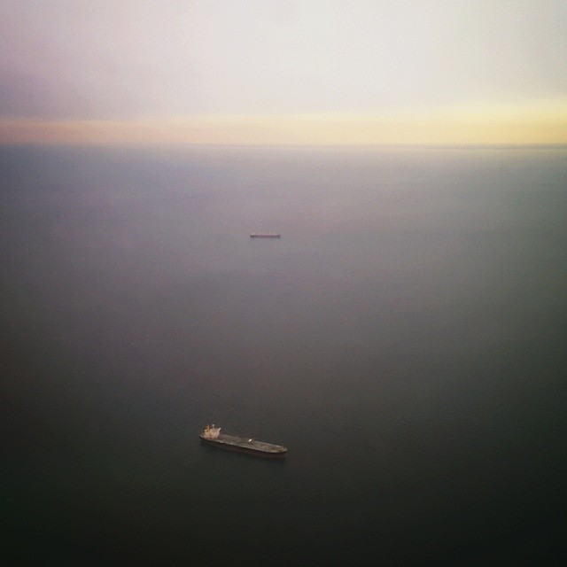

(this page intentionally left blank)
DISP ERS ING.
something to say, forgotten words. where?

begin with thoughts, sinister old friends.
"a triumph," said in great passion.
(this page intentionally left blank)
something to say, forgotten words. where?
begin with thoughts, sinister old friends.
"a triumph," said in great passion.